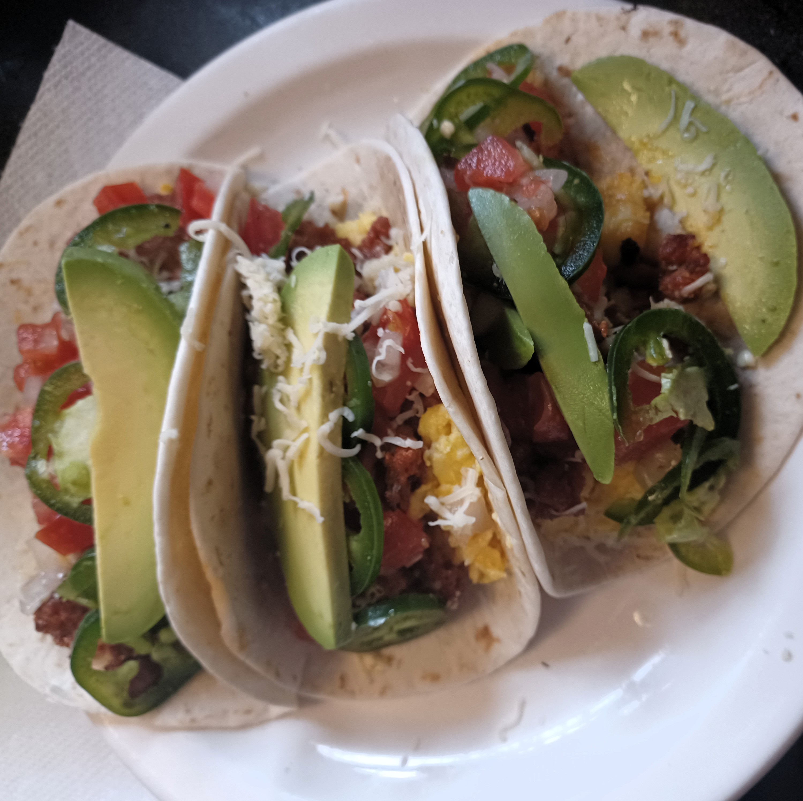

These breakfast tacos are a great way to start your day. Most of this can be prepared ahead of time, so that you can build these in the morning for a quick breakfast. With bright flavors, from the pico de gallo and lime pickled jalapenos, combined with the richness of the soft scrambled eggs and chorizo, these tacos have a balanced taste that is sure to delight.